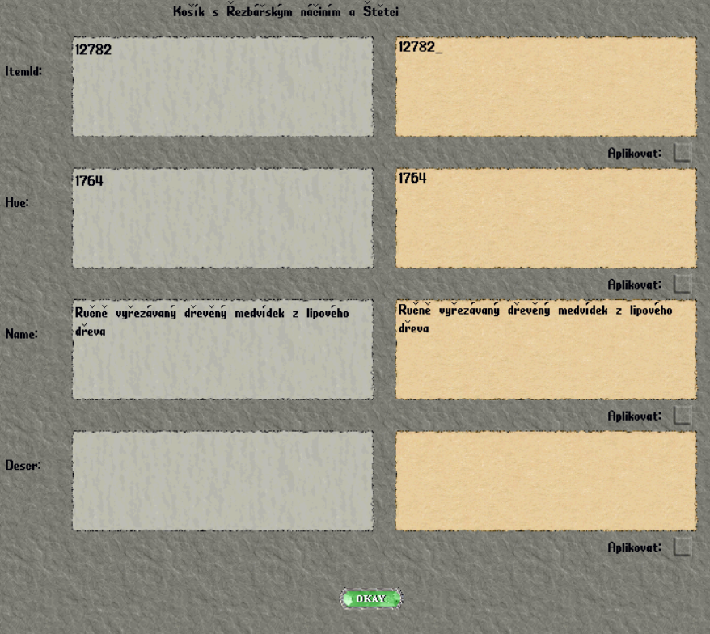

Pokyny k výrobě a úpravám
1. Výrobu doprovázej emoty
Veškerou výrobu emotuj! Popiš, jak tvá postava pracuje a jak výrobek postupně vzniká.
Vždy pracuj pouze s materiály, které skutečně máš. Vzhled, název i popis výrobku musí odpovídat použitým materiálům a schopnostem tvé postavy. Drobné nedostatky a chyby mohou být hezkým zpestřením.
2. Vyber vzhled předmětu: ItemID
ItemID určuje vzhled předmětu.Dostupné předlohy pro vyřezávání najdeš v seznamu obrázků s jejich kódy najdeš v odkazu na barvy níže.
3. Vyber barvu: Hue
Hue určuje barvu předmětu. V barevném náhledu vyber předmět a vyzkoušej si dostupné odstíny. Pro změnu barvy použij číslo uvedené u vybrané barvy za označením Hue. Vyzkoušet barvy si můžeš v odkazu níže.
4. Uprav název a popis: Name a Descr
| Pole v okně | Co zadat | Limit |
|---|---|---|
| Name | Vlastní název odpovídající výrobku a použitým materiálům. | Nejvýše 80 znaků včetně mezer. |
| Descr | Popis a detaily vzhledu, které se nevešly do názvu. | Nejvýše 240 znaků včetně mezer. |
Popis začni velkým písmenem a zakonči tečkou.
Popis lze měnit pouze u dekorací. U nádob a krabiček změna popisu nefunguje.
- Vyplň údaje, které chceš změnit.
- U každé změněné položky zaškrtni Aplikovat a všechny změny potvrď tlačítkem OKAY.

5. Zkontroluj hotový výrobek
Výrobek si blíže prohlédni. Ověř, že se název a případný popis zobrazují celé a žádná část textu se neusekla. Pokud něco chybí, text zkrať nebo uprav a znovu ho zkontroluj.
- Do názvu ani popisu nepatří žádná nevhodná slova.
- Drž se materiálů, které máš k dispozici, a toho, co tvá postava zvládne.
Vyber si barvu
Prohlédni si předměty pro řezbářství a vyzkoušej jejich barevné varianty.